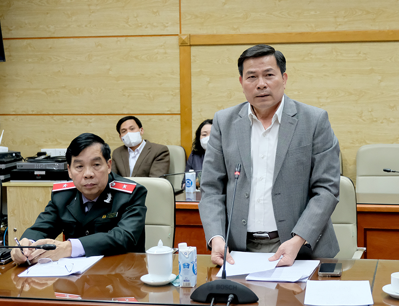
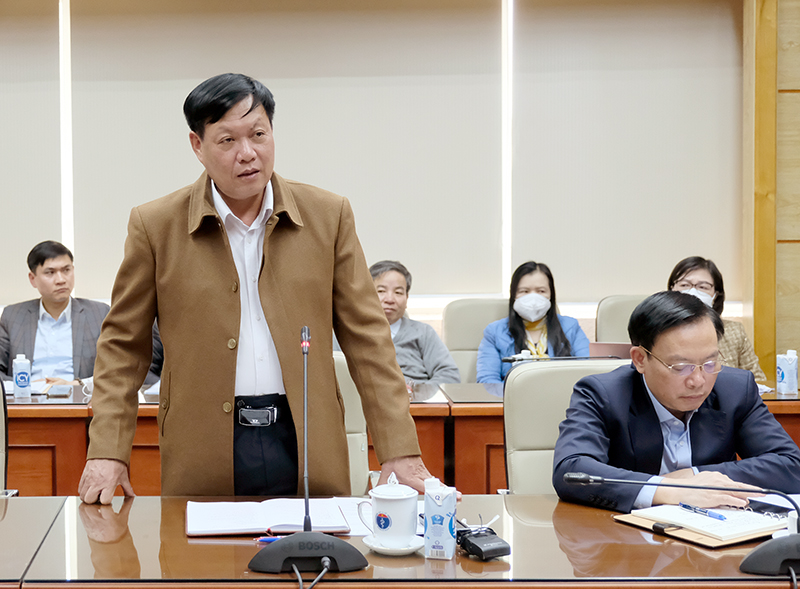

Ngày 19/01, tại Bộ Y tế, Phó Tổng Thanh tra Chính phủ Trần Văn Minh đã chủ trì buổi công bố quyết định thanh tra việc mua sắm trang thiết bị, vật tư, sinh phẩm, Kít xét nghiệm, vắc xin, thuốc phòng, chống dịch COVID-19 tại Bộ Y tế. Dự buổi công bố quyết định có ông Đỗ Xuân Tuyên, Thứ trưởng Bộ Y tế, đại diện lãnh đạo các đơn vị liên quan thuộc Bộ Y tế và toàn thể thành viên Đoàn thanh tra.
Theo Quyết định số 20/QĐ-TTCP ngày 18/1/2022, Thanh tra Chính phủ (TTCP) tiến hành thanh tra việc việc mua sắm trang thiết bị, vật tư, sinh phẩm, Kít xét nghiệm, vắc xin, thuốc phòng, chống dịch COVID-19 tại Bộ Y tế và một số đơn vị sự nghiệp thuộc Bộ Y tế. Thời kỳ thanh tra từ 1/1/2020-31/12/2021. Khi cần thiết có thể thanh tra trước hoặc sau thời kỳ trên. Thời hạn thanh tra là 45 ngày làm việc thực tế (trừ ngày nghỉ lễ theo quy định, ngày nghỉ do thực hiện quy định về phòng, chống dịch). Đoàn Thanh tra gồm 14 thành viên do ông Diêm Đăng Việt, Phó Vụ trưởng Vụ Thanh tra, Giải quyết khiếu nại, tố cáo khối văn hoá, xã hội (Vụ III - TTCP) làm Trưởng đoàn.

Tại buổi này, TTCP công bố quyết định số 30/QĐ-TTCP ngày 18/1/2022 thành lập Tổ giám sát hoạt động của Đoàn thanh tra do ông Đặng Trường Giang, Phó Phòng Nghiệp vụ 3, Vụ Giám sát, Thẩm định và Xử lý sau thanh tra (TTCP) làm Tổ trưởng.
Phát biểu tại buổi công bố quyết định thanh tra, Phó Tổng Thanh tra Trần Văn Minh cho biết đây là cuộc thanh tra theo kế hoạch năm 2022 của Thanh tra Chính phủ. Chia sẻ khó khăn với ngành Y tế trong việc thực hiện phòng chống dịch COVID-19 thời gian qua, Phó Tổng Thanh tra yêu cầu Đoàn thanh tra trong quá trình làm việc tránh làm ảnh hưởng đến hoạt động bình thường của đơn vị; thực hiện nghiêm túc các nội dung được phê duyệt, đảm bảo đúng thời gian và nguyên tắc hoạt động Đoàn thanh tra; thực hiện nghiêm công tác phòng, chống dịch, đảm bảo 5K theo khuyến cáo của Bộ Y tế, cùng với đó, quán triệt thực hiện đúng quy định về kỷ luật phát ngôn và bảo mật thông tin. Về phía Bộ Y tế, Phó Tổng Thanh tra Trần Văn Minh đề nghị, Lãnh đạo Bộ Y tế giao một đầu mối cố định để làm việc với Đoàn, tạo điều kiện thuận lợi giúp Đoàn Thanh tra làm việc hiệu quả và hoàn thành tốt nhiệm vụ được giao.
Thay mặt Lãnh đạo Bộ Y tế, Thứ trưởng Đỗ Xuân Tuyên tiếp thu toàn bộ ý kiến chỉ đạo của Phó Tổng TTCP Trần Văn Minh, đồng thời chỉ đạo các đơn vị triển khai thực hiện nghiêm túc các nội dung báo cáo theo yêu cầu của Đoàn thanh tra. Lãnh đạo Bộ Y tế giao Chánh Thanh tra Bộ làm đầu mối thường xuyên liên hệ và làm việc với Đoàn. Yêu cầu các đơn vị, vụ, cục trực thuộc Bộ và các đơn vị liên quan theo chức năng nhiệm vụ hoàn thiện báo cáo gửi về Thanh tra Bộ đúng thời hạn quy định, để tổng hợp gửi Đoàn thanh tra; các đơn vị tạo điều kiện tối đa cho Đoàn Thanh tra làm việc, phối hợp chặt chẽ với Đoàn thanh tra để cung cấp hồ sơ, tài liệu theo yêu cầu, đồng thời đảm bảo chế độ bảo mật thông tin.